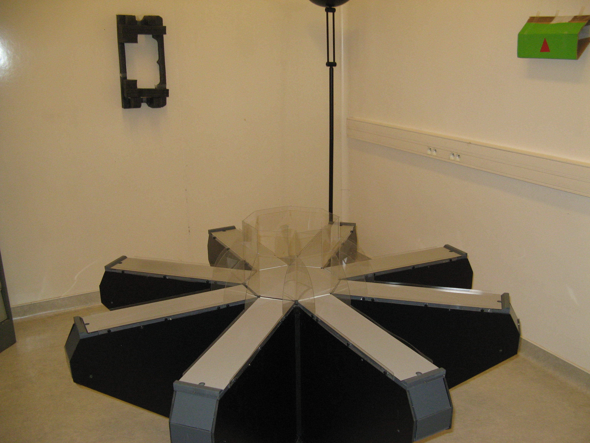

About me
I'm a PhD student in the lab of Prof. Tiaza Bem, at the Nałęcz Institute of Biocybernetics and Biomedical Engineering, Polish Academy of Sciences, in Warsaw 
We're working on various aspects of information processing in the nervous system, with focus on the neural mechanisms of systems memory consolidation in 'off-line' brain states (during sleep mainly), particularily the hippocampus-neocortex dialogue.
Lately, I've spent some amount of time developing an idea of "synaptic clock", that happened to me inspired by: experiments with mice/rats searching for food in a maze like this → , a paper by our colleagues from Taiwan on a reward-modulated learning algorithm in an artificial neural network allowing it to guide a simulated robot's behaviour, and one philosophical theory of time and consciousness - with results of these efforts to be found here and here.
Before that, these two were accomplished:
Neuroinformatics Master Thesis (in Polish) - "Analysis of the functional connections between cortex and hippocampus during hippocampal LFP oscillations called ripples"
Neuroinformatics Bachelor Thesis (in Polish) - "Do we have free will - an analysis of the experiment of Libet" (verdict→ it's still unclear)